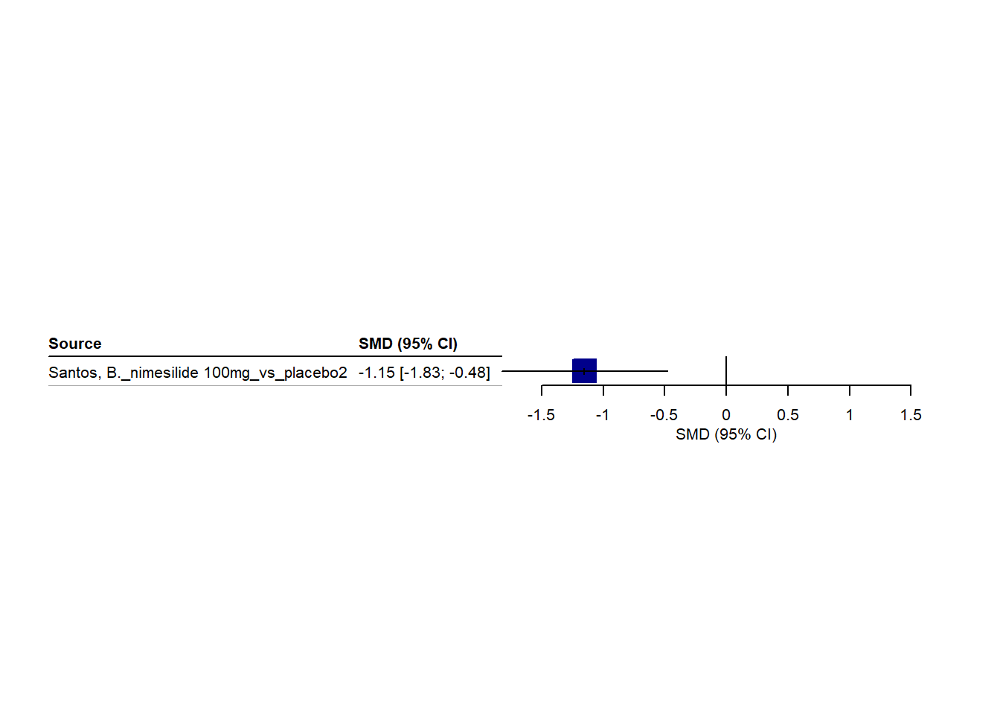
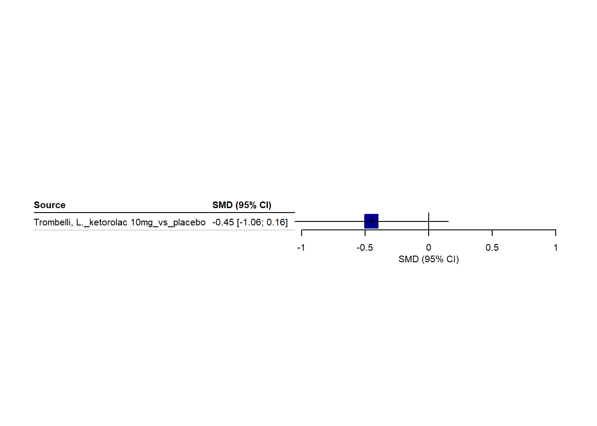
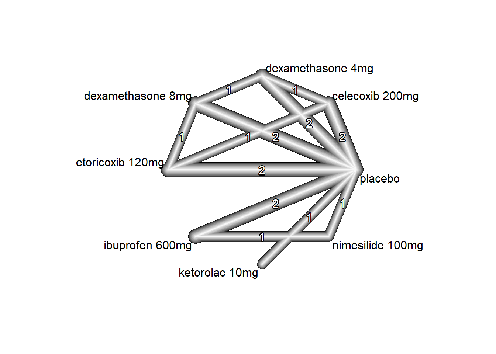
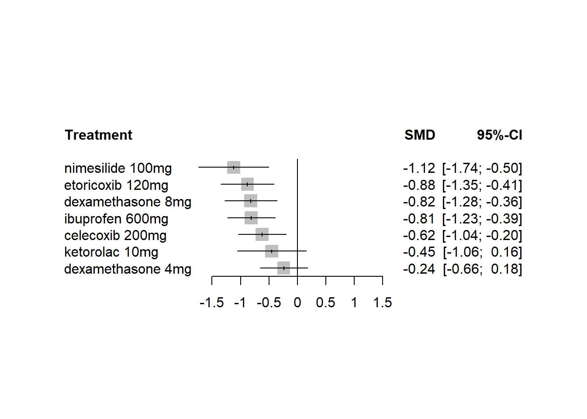
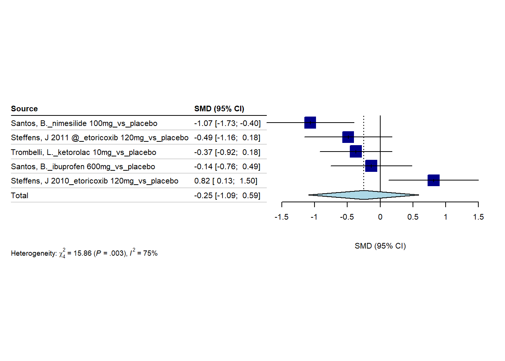
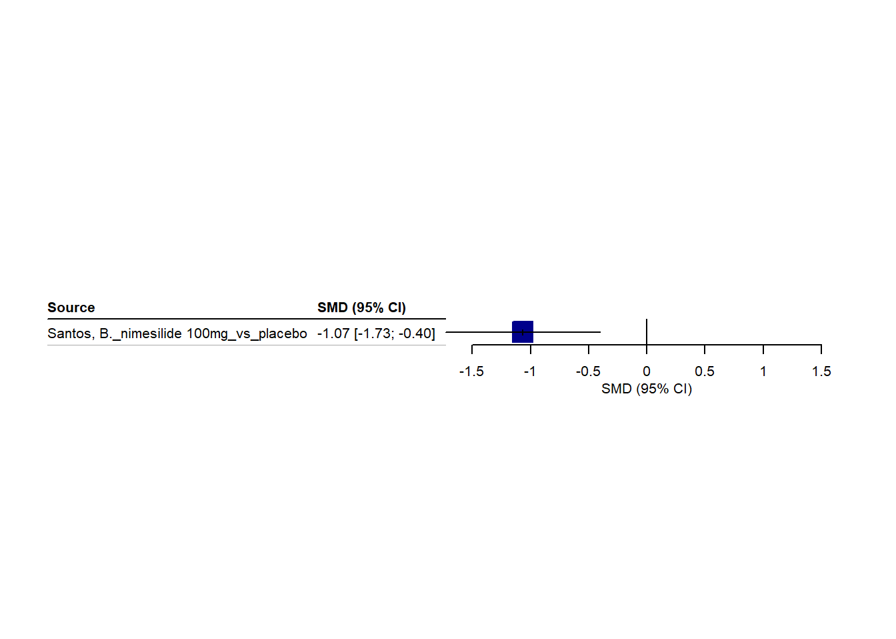
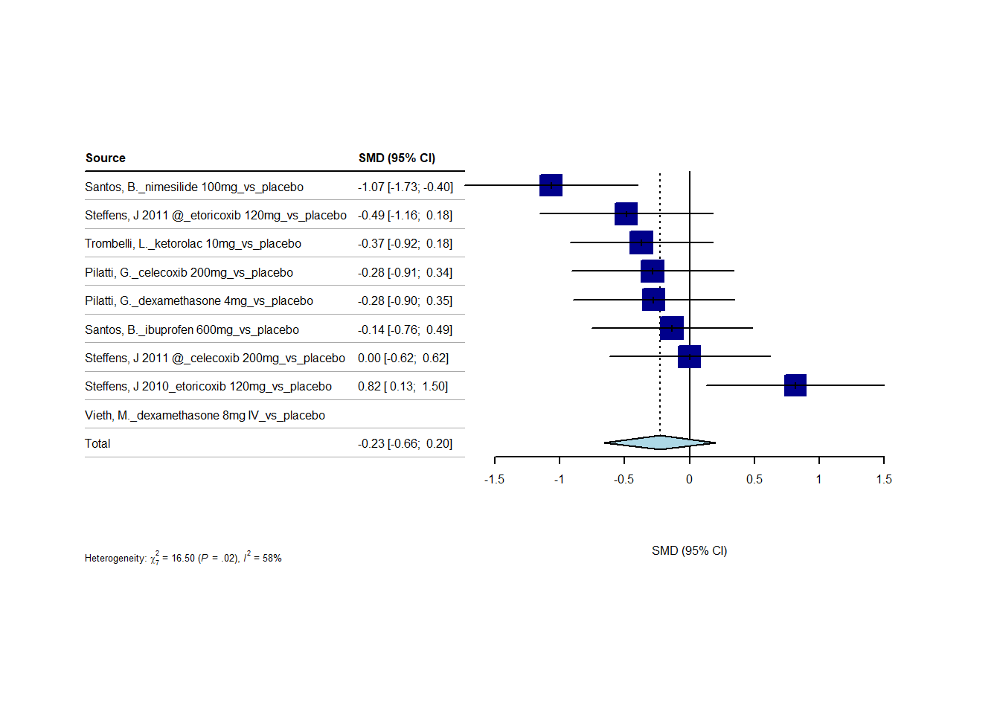
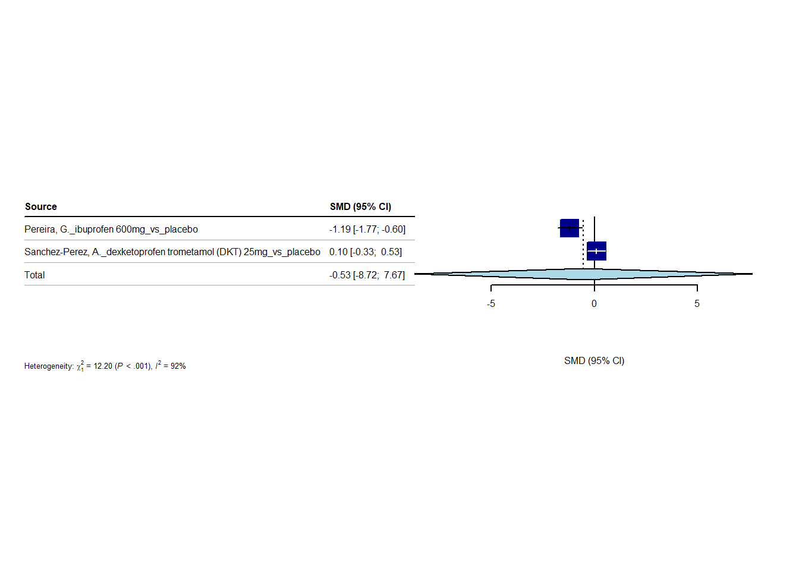
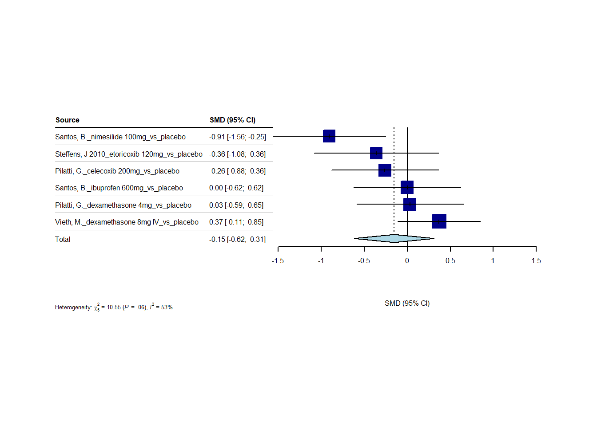
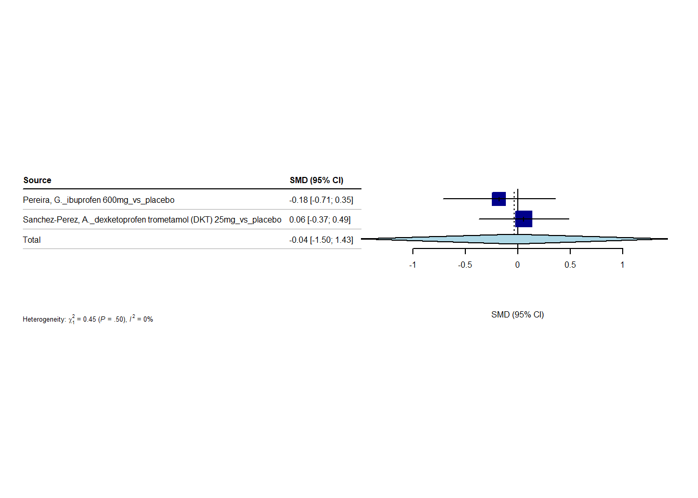

3/8/2023
2023-03-08
Last updated: 2023-10-30
Checks: 6 1
Knit directory: Collaborations/
This reproducible R Markdown analysis was created with workflowr (version 1.7.0). The Checks tab describes the reproducibility checks that were applied when the results were created. The Past versions tab lists the development history.
The R Markdown file has unstaged changes. To know which version of
the R Markdown file created these results, you’ll want to first commit
it to the Git repo. If you’re still working on the analysis, you can
ignore this warning. When you’re finished, you can run
wflow_publish to commit the R Markdown file and build the
HTML.
Great job! The global environment was empty. Objects defined in the global environment can affect the analysis in your R Markdown file in unknown ways. For reproduciblity it’s best to always run the code in an empty environment.
The command set.seed(20210523) was run prior to running
the code in the R Markdown file. Setting a seed ensures that any results
that rely on randomness, e.g. subsampling or permutations, are
reproducible.
Great job! Recording the operating system, R version, and package versions is critical for reproducibility.
Nice! There were no cached chunks for this analysis, so you can be confident that you successfully produced the results during this run.
Great job! Using relative paths to the files within your workflowr project makes it easier to run your code on other machines.
Great! You are using Git for version control. Tracking code development and connecting the code version to the results is critical for reproducibility.
The results in this page were generated with repository version fae8b80. See the Past versions tab to see a history of the changes made to the R Markdown and HTML files.
Note that you need to be careful to ensure that all relevant files for
the analysis have been committed to Git prior to generating the results
(you can use wflow_publish or
wflow_git_commit). workflowr only checks the R Markdown
file, but you know if there are other scripts or data files that it
depends on. Below is the status of the Git repository when the results
were generated:
Ignored files:
Ignored: .Rhistory
Ignored: analysis/.Rhistory
Ignored: analysis/2022_Mar2_Marinho_cache/
Unstaged changes:
Modified: analysis/2023_0301_Christos.Rmd
Note that any generated files, e.g. HTML, png, CSS, etc., are not included in this status report because it is ok for generated content to have uncommitted changes.
These are the previous versions of the repository in which changes were
made to the R Markdown (analysis/2023_0301_Christos.Rmd)
and HTML (docs/2023_0301_Christos.html) files. If you’ve
configured a remote Git repository (see ?wflow_git_remote),
click on the hyperlinks in the table below to view the files as they
were in that past version.
| File | Version | Author | Date | Message |
|---|---|---|---|---|
| Rmd | fae8b80 | han | 2023-10-30 | 10/30/2023 |
| html | fae8b80 | han | 2023-10-30 | 10/30/2023 |
| Rmd | 4f4b766 | han | 2023-10-30 | 10/30/2023 |
| html | 4f4b766 | han | 2023-10-30 | 10/30/2023 |
| Rmd | 32e3636 | han | 2023-10-26 | 10/26/2023 |
| html | 32e3636 | han | 2023-10-26 | 10/26/2023 |
| Rmd | f132d49 | han | 2023-10-26 | 10/26/2023 |
| html | f132d49 | han | 2023-10-26 | 10/26/2023 |
| Rmd | 53902c6 | han | 2023-09-29 | 9/29/2023 |
| html | 53902c6 | han | 2023-09-29 | 9/29/2023 |
| Rmd | 34b3c63 | Han | 2023-09-25 | 9/25/2023 |
| html | 34b3c63 | Han | 2023-09-25 | 9/25/2023 |
| Rmd | 708ee65 | Han | 2023-09-21 | 9/21/2023 |
| html | 708ee65 | Han | 2023-09-21 | 9/21/2023 |
| Rmd | 30dc6d5 | Han | 2023-09-20 | 9/20/2023 |
| html | 30dc6d5 | Han | 2023-09-20 | 9/20/2023 |
| Rmd | a216c67 | Han | 2023-09-13 | 9/13/2023 |
| html | a216c67 | Han | 2023-09-13 | 9/13/2023 |
| Rmd | 2605ffb | Han | 2023-09-13 | 9/13/2023 |
| html | 2605ffb | Han | 2023-09-13 | 9/13/2023 |
| Rmd | 93f67c8 | Han | 2023-09-12 | 9/12/2023 |
| html | 93f67c8 | Han | 2023-09-12 | 9/12/2023 |
| Rmd | 467a979 | Han | 2023-09-11 | 9/11/2023 |
| html | 467a979 | Han | 2023-09-11 | 9/11/2023 |
| Rmd | 10d8e30 | Han | 2023-09-07 | 9/7/2023 |
| html | 10d8e30 | Han | 2023-09-07 | 9/7/2023 |
| Rmd | a627596 | Han | 2023-09-06 | 9/6/2023 |
| html | a627596 | Han | 2023-09-06 | 9/6/2023 |
| Rmd | 67f6d95 | Han | 2023-09-05 | 9/5/2023 |
| html | 67f6d95 | Han | 2023-09-05 | 9/5/2023 |
| Rmd | d16b445 | Han | 2023-08-31 | 8/31/2023 |
| html | d16b445 | Han | 2023-08-31 | 8/31/2023 |
| Rmd | 26fda45 | Han | 2023-08-29 | 8/29/2023 |
| html | 26fda45 | Han | 2023-08-29 | 8/29/2023 |
| Rmd | a0cb15c | Han | 2023-08-25 | 8/25/2023 |
| html | a0cb15c | Han | 2023-08-25 | 8/25/2023 |
| Rmd | 91a9a58 | Han | 2023-08-25 | 8/25/2023 |
| html | 91a9a58 | Han | 2023-08-25 | 8/25/2023 |
| Rmd | 987f10a | Han | 2023-08-24 | 8/24/2023 |
| html | 987f10a | Han | 2023-08-24 | 8/24/2023 |
| Rmd | 5e8c202 | Han | 2023-08-23 | 8/23/2023 |
| html | 5e8c202 | Han | 2023-08-23 | 8/23/2023 |
| Rmd | 64befe3 | Han | 2023-07-19 | 7/19/2023 |
| html | 64befe3 | Han | 2023-07-19 | 7/19/2023 |
| Rmd | 04bd40f | Han | 2023-06-26 | 6/26/2023 |
| html | 04bd40f | Han | 2023-06-26 | 6/26/2023 |
| Rmd | a851367 | Han | 2023-06-26 | 6/26/2023 |
| html | a851367 | Han | 2023-06-26 | 6/26/2023 |
| Rmd | 48884b2 | Han | 2023-06-26 | 6/26/2023 |
| html | 48884b2 | Han | 2023-06-26 | 6/26/2023 |
| Rmd | 31f8333 | Han | 2023-06-07 | 6/7/2023 |
| html | 31f8333 | Han | 2023-06-07 | 6/7/2023 |
| Rmd | f296096 | Han | 2023-06-06 | 6/6/2023 |
| html | f296096 | Han | 2023-06-06 | 6/6/2023 |
| Rmd | e9ee5e1 | Han | 2023-06-06 | 6/6/2023 |
| html | e9ee5e1 | Han | 2023-06-06 | 6/6/2023 |
| Rmd | 15e0c71 | Han | 2023-06-05 | 6/5/2023 |
| Rmd | 74ade81 | Han | 2023-05-24 | 5/24/2023 |
| Rmd | fb9d51e | Han | 2023-05-17 | 5/17/2023 |
| html | fb9d51e | Han | 2023-05-17 | 5/17/2023 |
| Rmd | 89ce1ba | Han | 2023-05-15 | 5/15/2023 |
| html | 89ce1ba | Han | 2023-05-15 | 5/15/2023 |
| Rmd | e341292 | Han | 2023-05-15 | 5/15/2023 |
| html | e341292 | Han | 2023-05-15 | 5/15/2023 |
| Rmd | 0c70ed0 | Han | 2023-05-15 | 5/15/2023 |
| html | 0c70ed0 | Han | 2023-05-15 | 5/15/2023 |
| Rmd | d3ee077 | Han | 2023-04-10 | 4/10/2023 |
| html | d3ee077 | Han | 2023-04-10 | 4/10/2023 |
| Rmd | ecabd2b | Han | 2023-04-03 | 4/3/2023 |
| html | ecabd2b | Han | 2023-04-03 | 4/3/2023 |
| Rmd | c891d01 | Han | 2023-03-20 | 3/20/2023 |
| html | c891d01 | Han | 2023-03-20 | 3/20/2023 |
| Rmd | 1f23563 | Han | 2023-03-08 | 3/8/2023 |
| html | 1f23563 | Han | 2023-03-08 | 3/8/2023 |
one hour
sample data
forest plots
ALL studies per author – no groups

1 hour - Studies per surgery

1 hour - Studies per timing of preemptive medication administration
Preemptive medication given 1 hour prior to surgery or longer

Preemptive medication given less than 1 hour prior to surgery

1 hour - Studies only with ibuproben
1 hour - Studies only with dexamethasone
1 hour - Sensitivity analysis
For an individual study, a square with treatment estimate in the center and confidence interval as line extending either side of the square. The size of this square is determined by the weight.
vertical reference lines indicates the point of no effect
For meta-analysis results, a diamond with treatment estimate in the center and right and left side corresponding to lower and upper confidence limits
heterogeneity (null hypothesis: all studies estimate the same effect) is measured by Cochran’s Q, which is calculated as the weighted sum of squared differences between individual study effects and the pooled effect across studies, following \(\chi^2\) distribution with number of studies-1 DF.
\(I^2\) statistic describes the percentage of variation across studies that is due to heterogeneity rather than chance more details.
n1=63; s1=21; n2=61; s2=25
# Calculate s_pooled
s_pooled <- sqrt( # s_pooled is pooled standard deviation
(((n1-1)*s1^2) + ((n2-1)*s2^2))/
((n1-1)+(n2-1))
)
# Calculate the standard error
se <- s_pooled*sqrt((1/n1)+(1/n2))
#se
mean1=10; mean2=19
(mean1-mean2)/s_pooled # this is SMD [1] -0.390386network meta-analysis
- overall comparison structure
- direct links mean there are direct comparison, otherwise indirect comparisons
- degree of thickness represents how often we find a specific comparison
- numbers on the edge indicate how many studies involve that comparison
- a mean path length > 2 means that a comparison estimate should be interpreted with particular caution.
P-score
nimesilide 100mg 0.9185
ibuprofen 600mg 0.8320
dexamethasone 8mg 0.5577
ketorolac 10mg 0.5559
etoricoxib 120mg 0.4775
ibuprofen 400mg 0.4165
celecoxib 200mg 0.3492
placebo 0.1986
dexamethasone 4mg 0.1941
- higher P-score, the better it is
three hours
sample data
forest plot
3 hours - Studies per medication
3 hours - Studies only with dexamethazone
3 hours - Sensitivity analysis

network meta-analysis

- overall comparison structure
- direct links mean there are direct comparison, otherwise indirect comparisons
- degree of thickness represents how often we find a specific comparison
- numbers on the edge indicate how many studies involve that comparison
- a mean path length > 2 means that a comparison estimate should be interpreted with particular caution.
P-score
ketorolac 10mg 0.8304
dexamethasone 8mg 0.6923
etoricoxib 120mg 0.6738
celecoxib 200mg 0.5628
dexamethasone 4mg 0.2370
placebo 0.0038- higher P-score, the better it is
6 hours
sample data
forest plot
6 hours - Studies per surgery
MA 1 – periodontal surgery

6 hours - Studies only with ibuproben

6 hours - Studies only with dexamethazone
6 hours - Sensitivity analysis

network meta-analysis


- a mean path length > 2 means that a comparison estimate should be interpreted with particular caution.
P-score
nimesilide 100mg 0.8839
etoricoxib 120mg 0.7308
dexamethasone 8mg 0.6725
ibuprofen 600mg 0.6557
celecoxib 200mg 0.4840
ketorolac 10mg 0.3587
dexamethasone 4mg 0.1852
placebo 0.02928 hours
sample data
forest plot


network meta-analysis

- a mean path length > 2 means that a comparison estimate should be interpreted with particular caution.
P-score
dexamethasone 8mg 0.9601
etoricoxib 120mg 0.6964
dexamethasone 4mg 0.5562
celecoxib 200mg 0.5435
ketorolac 10mg 0.4609
placebo 0.1601
dexketoprofen trometamol (DKT) 25mg 0.122824 hours
sample data
forest plot

network meta-analysis
Comparison not considered in network meta-analysis:
studlab treat1 treat2 TE seTE
Vieth, M. dexamethasone 8mg IV placebo NA NA- a mean path length > 2 means that a comparison estimate should be interpreted with particular caution.
P-score
ibuprofen 600mg 0.8262
nimesilide 100mg 0.7399
ketorolac 10mg 0.5706
dexamethasone 4mg 0.4542
placebo 0.3645
celecoxib 200mg 0.3614
dexketoprofen trometamol (DKT) 25mg 0.3460
etoricoxib 120mg 0.33723 days
sample data
forest plot

network meta-analysis
- a mean path length > 2 means that a comparison estimate should be interpreted with particular caution.
P-score
nimesilide 100mg 0.6466
etoricoxib 120mg 0.6332
ibuprofen 600mg 0.6301
celecoxib 200mg 0.5738
dexamethasone 4mg 0.4379
placebo 0.4175
dexketoprofen trometamol (DKT) 25mg 0.4112
dexamethasone 8mg IV 0.2497Sample size determination
mean_difference=seq(1,20); # use the median difference as mean difference
SD=18/1.35 # use SD=IQR/1.35
sample_size=numeric()
for (i in 1:length(mean_difference))
sample_size[i]=round(power.t.test(power = .80, delta = mean_difference[i], alternative = "two.sided", sig.level=0.05, sd=SD)$n)
data.frame(mean_difference, sample_size)%>%
datatable(extensions = 'Buttons',
caption="mean difference vs sample size",
options = list(dom = 'Blfrtip',
buttons = c('copy', 'csv', 'excel', 'pdf', 'print'),
lengthMenu = list(c(10,25,50,-1),
c(10,25,50,"All"))))sample size with varying mean difference, given 80% power.
mean_difference=seq(0.1,4, by=0.5); # mean difference
SD=max(1.48,1.21) # use SD maximum
sample_size=numeric()
for (i in 1:length(mean_difference))
sample_size[i]=round(power.t.test(power = .80, delta = mean_difference[i], alternative = "two.sided", sig.level=0.05, sd=SD)$n)
data.frame(mean_difference, sample_size)%>%
datatable(extensions = 'Buttons',
caption="mean difference vs sample size",
options = list(dom = 'Blfrtip',
buttons = c('copy', 'csv', 'excel', 'pdf', 'print'),
lengthMenu = list(c(10,25,50,-1),
c(10,25,50,"All"))))- sample size with varying mean difference, given 80% power.
sessionInfo()R version 4.2.2 (2022-10-31 ucrt)
Platform: x86_64-w64-mingw32/x64 (64-bit)
Running under: Windows 10 x64 (build 19045)
Matrix products: default
locale:
[1] LC_COLLATE=English_United States.utf8
[2] LC_CTYPE=English_United States.utf8
[3] LC_MONETARY=English_United States.utf8
[4] LC_NUMERIC=C
[5] LC_TIME=English_United States.utf8
attached base packages:
[1] stats graphics grDevices utils datasets methods base
other attached packages:
[1] dmetar_0.1.0 netmeta_2.8-2 meta_6.2-1 multinma_0.5.0
[5] readxl_1.4.2 DT_0.27 rstatix_0.7.2 ggpubr_0.6.0
[9] kableExtra_1.3.4 forcats_1.0.0 stringr_1.5.0 dplyr_1.0.10
[13] purrr_1.0.1 readr_2.1.4 tidyr_1.3.0 tibble_3.1.8
[17] ggplot2_3.4.1 tidyverse_1.3.2
loaded via a namespace (and not attached):
[1] metadat_1.2-0 backports_1.4.1 workflowr_1.7.0
[4] systemfonts_1.0.4 igraph_1.4.1 splines_4.2.2
[7] crosstalk_1.2.0 rstantools_2.3.0 inline_0.3.19
[10] digest_0.6.31 htmltools_0.5.4 fansi_1.0.3
[13] magrittr_2.0.3 truncdist_1.0-2 googlesheets4_1.0.1
[16] cluster_2.1.4 tzdb_0.3.0 extrafont_0.19
[19] modelr_0.1.10 RcppParallel_5.1.7 matrixStats_0.63.0
[22] extrafontdb_1.0 svglite_2.1.1 timechange_0.2.0
[25] prettyunits_1.1.1 colorspace_2.0-3 rvest_1.0.3
[28] ggrepel_0.9.2 haven_2.5.1 rbibutils_2.2.13
[31] xfun_0.37 callr_3.7.3 crayon_1.5.2
[34] jsonlite_1.8.4 lme4_1.1-31 glue_1.6.2
[37] gtable_0.3.1 gargle_1.3.0 webshot_0.5.4
[40] kernlab_0.9-32 car_3.1-1 pkgbuild_1.4.0
[43] evd_2.3-6.1 Rttf2pt1_1.3.12 rstan_2.21.8
[46] DEoptimR_1.0-11 prabclus_2.3-2 abind_1.4-5
[49] scales_1.2.1 DBI_1.1.3 Rcpp_1.0.9
[52] viridisLite_0.4.1 magic_1.6-1 mclust_6.0.0
[55] stats4_4.2.2 StanHeaders_2.21.0-7 htmlwidgets_1.6.1
[58] httr_1.4.5 fpc_2.2-10 ellipsis_0.3.2
[61] modeltools_0.2-23 farver_2.1.1 pkgconfig_2.0.3
[64] loo_2.5.1 flexmix_2.3-19 nnet_7.3-18
[67] sass_0.4.5 dbplyr_2.3.0 utf8_1.2.2
[70] labeling_0.4.2 tidyselect_1.2.0 rlang_1.0.6
[73] later_1.3.0 munsell_0.5.0 cellranger_1.1.0
[76] tools_4.2.2 cachem_1.0.7 cli_3.4.1
[79] generics_0.1.3 broom_1.0.3 mathjaxr_1.6-0
[82] evaluate_0.20 fastmap_1.1.0 yaml_2.3.7
[85] processx_3.8.0 knitr_1.42 fs_1.5.2
[88] robustbase_0.95-0 rgl_1.2.1 nlme_3.1-160
[91] whisker_0.4.1 xml2_1.3.3 compiler_4.2.2
[94] rstudioapi_0.14 ggsignif_0.6.4 reprex_2.0.2
[97] bslib_0.4.2 stringi_1.7.8 highr_0.10
[100] ps_1.7.2 lattice_0.20-45 poibin_1.5
[103] Matrix_1.5-1 nloptr_2.0.3 vctrs_0.5.2
[106] CompQuadForm_1.4.3 pillar_1.8.1 lifecycle_1.0.3
[109] Rdpack_2.4 jquerylib_0.1.4 httpuv_1.6.9
[112] R6_2.5.1 MuMIn_1.47.5 promises_1.2.0.1
[115] gridExtra_2.3 codetools_0.2-18 boot_1.3-28
[118] MASS_7.3-58.1 assertthat_0.2.1 rprojroot_2.0.3
[121] withr_2.5.0 metafor_4.0-0 diptest_0.76-0
[124] parallel_4.2.2 hms_1.1.2 grid_4.2.2
[127] class_7.3-20 minqa_1.2.5 rmarkdown_2.20
[130] carData_3.0-5 googledrive_2.0.0 git2r_0.31.0
[133] base64enc_0.1-3 numDeriv_2016.8-1.1 lubridate_1.9.2